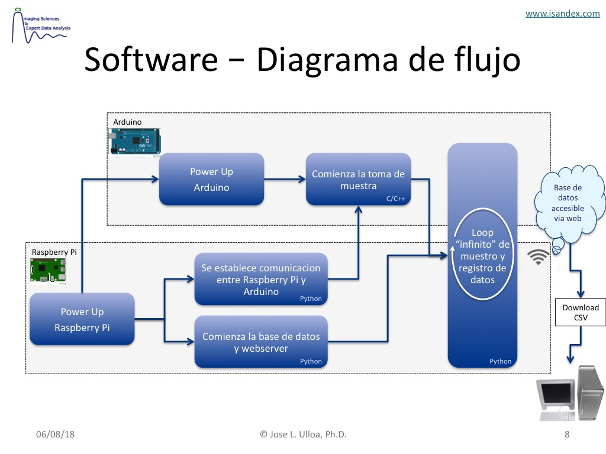

Funcionamiento Basico del Software Pydroponia¶

Figura 35 Diagrama de bloques componentes del software Pydroponia
Comandos basicos de operacion¶
Instalacion desde repositorio¶
cd ${HOME}
git clone https://jlulloaa@bitbucket.org/jlulloaa/pydroponia.git
cd pydroponia
./setup.sh
sudo reboot
Actualizacion del codigo fuente¶
cd ${HOME}/pydroponia
git pull
./setup.sh
sudo reboot
Inicio manual del data logger¶
cd ${HOME}/bin/bioagro
./start.sh
Inicio manual del servidor web¶
cd ${HOME}/bin/bioagro
./start_webserver.sh
Ir a: http://pydro001.local
Work in progres…